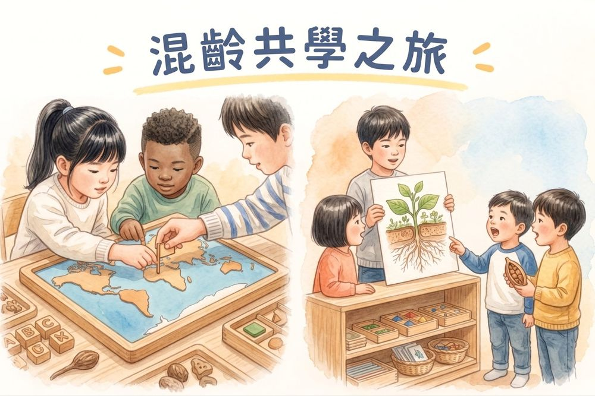

01
在真實關係中學習
孩子不只從大人身上學習，也會從同伴身上學習。混齡共學讓孩子在自然的互動中，透過觀察、模仿、合作與教導學習。
對大孩子來說，教導別人也是一種深度學習；對小孩子來說，稍有經驗的哥哥姊姊，往往能成為最自然的學習榜樣。真正重要的學習，不只發生在課本裡，更發生在真實的人與人之間。
混齡共學，讓孩子學習：
- 幫助別人，也接受別人的幫助
- 表達自己，也理解他人
- 合作、溝通與解決問題
- 在不同年齡的互動中，找到自己的位置與成長
孩子帶走的，是如何與人相處、如何成為一個願意幫助別人的人。